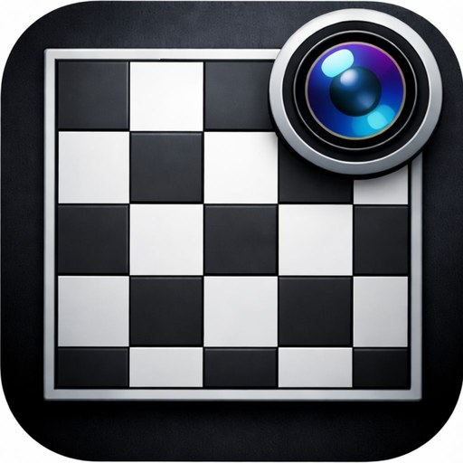

ChessCaptureSupport & privacy
Contact support
Something not reading right, or have an idea? Send us a message. If a scan went wrong, tell us what the board looked like (lighting, angle, piece style) and your device model and iOS version.
Common questions
The scan got a piece wrong. What should I do?
Fix it in the board editor: pick the right piece from the palette and tap the square, or use Erase. Recognition works best with a bright, even, glare-free photo of the whole board taken from above. Adding photos from White's and Black's sides can help with tall or similar-looking pieces.
Why does ChessCapture need camera or photo access?
Only to scan a board. You can allow the camera, your photo library, or both, and change this any time in iOS Settings.
Are my photos uploaded anywhere?
No. Recognition happens entirely on your iPhone, and the photos ChessCapture keeps are deleted automatically within 24 hours.
How do I get the position into Lichess or Chess.com?
After a scan, tap Open in Lichess or Open in Chess.com to open the position in that site's analysis board, or tap Copy and paste the FEN wherever you need it.
Privacy policy
ChessCapture · Effective October 21, 2026ChessCapture turns a photo of a chess board into a digital position you can edit and analyze. This policy explains what information the app handles, how it is used, and the choices available to you. In short: ChessCapture works on your device, has no accounts, and does not collect personal information.
1. Photos you scan
When you take a photo with the camera or choose one from your photo library, ChessCapture analyzes it on your device using on-device machine learning to find the board and identify the pieces. Your photos are never uploaded to our servers or shared with anyone.
ChessCapture may keep a temporary copy of a scanned photo on your device so you can review or rescan it. These copies are deleted automatically within 24 hours. Photos in your own photo library are not changed or deleted by ChessCapture.
2. Information we do not collect
ChessCapture does not require an account and does not collect your name, email address, location, contacts, or device identifiers. The app contains no advertising, analytics, or tracking tools, and we do not sell or share personal information.
3. Positions you export
Board positions (FEN) stay on your device unless you choose to export them. When you tap Copy, the FEN is placed on your device's clipboard. When you use Share, it is sent to the app or person you choose. When you tap Open in Lichess or Open in Chess.com, the FEN is included in the link that opens that website, and that service's own privacy policy applies from then on.
4. Permissions
ChessCapture asks for camera access to photograph a board and photo library access to choose an existing photo. These permissions are used only for scanning. You can grant or revoke them at any time in iOS Settings.
5. Settings and crash reports
Preferences such as appearance are stored only on your device. If you have chosen to share analytics with app developers in your iOS settings, Apple may provide us with anonymous crash reports and usage statistics; these do not identify you.
6. Contacting us
If you contact support, we receive the information you choose to send, such as your name, email address, and message. We use it only to respond to you and to improve the app, and we delete it when it is no longer needed.
7. Children
ChessCapture does not knowingly collect personal information from anyone, including children under 13. If you believe a child has sent us personal information through support, contact us and we will delete it.
8. Changes to this policy
We may update this policy as the app changes. The effective date above will show when it was last updated, and material changes will be communicated when required.
9. Contact
For privacy questions or requests, use the contact form or email [SUPPORT EMAIL].
Terms of use
ChessCapture · Effective October 21, 20261. Acceptance of terms
By downloading or using ChessCapture (“the App”), you agree to these Terms of Use (“Terms”). If you do not agree, do not use the App. ChessCapture is developed and published by Blank Studio (“we,” “us,” or “our”). Our Privacy Policy explains how the App handles information and is part of these Terms.
2. Description of the service
ChessCapture is a utility that reads a chess position from a photo of a physical or on-screen chess board, lets you review and edit the position in a board editor, and exports it in Forsyth–Edwards Notation (FEN) so you can copy, share, or open it in third-party analysis tools such as Lichess and Chess.com.
Recognition is automated and may misread pieces or squares, especially with poor lighting, unusual angles, or uncommon piece designs. Always check the position before relying on it. ChessCapture is a tool for study and analysis and is not intended for use during rated games or competitions where outside assistance is prohibited.
3. License to use the App
We grant you a personal, non-exclusive, non-transferable, revocable license to use the App on Apple devices you own or control, as permitted by the App Store Usage Rules. The App is licensed, not sold. Apple's Licensed Application End User License Agreement also applies to your use of the App; where these Terms are more specific, they apply in addition to it.
4. Your photos and content
Photos you scan and positions you create remain yours. You are responsible for having the right to photograph and use the boards and images you scan. Scanned photos are processed on your device and temporary copies are deleted automatically within 24 hours, so please export any position you want to keep.
5. Acceptable use
You agree not to:
- use the App for unlawful purposes or to infringe the rights of others;
- use the App to cheat or to break the fair-play rules of any game, platform, or event;
- decompile, modify, or reverse engineer the App or its recognition models, except where the law expressly permits it; or
- interfere with the App's operation or attempt to bypass its security measures.
6. Intellectual property
The App itself, including its name, design, code, recognition models, and logo, belongs to Blank Studio and is protected by copyright and other intellectual property laws.
Lichess, Chess.com, and other third-party names are trademarks of their respective owners. ChessCapture is not affiliated with, endorsed by, or sponsored by Lichess, Chess.com, or any other chess service.
7. Third-party services and links
The App can open positions in Lichess and Chess.com and can share positions through apps you choose. Those services are governed by their own terms and privacy policies. We are not responsible for third-party content, services, availability, or data practices.
8. Changes and availability
We may update, change, or discontinue features of the App at any time. Links to third-party analysis tools may stop working if those services change.
9. Disclaimer
The App is provided “as is” and “as available,” without warranties of any kind, to the maximum extent permitted by law. We do not guarantee that board recognition will be accurate or complete.
10. Limitation of liability
To the maximum extent permitted by law, Blank Studio is not liable for any indirect, incidental, or consequential damages, or for any loss of data, interruptions, or inaccuracies, arising from your use of or inability to use the App. Our total liability for any claim relating to the App will not exceed the amount you paid for the App in the twelve months before the claim. Some jurisdictions do not allow these limitations, so they may not apply to you.
11. Termination
You may stop using the App at any time by deleting it. These Terms end automatically if you violate them.
12. Apple
These Terms are between you and Blank Studio, not Apple. Apple is not responsible for the App or its content and has no obligation to provide maintenance or support for it. If the App fails to conform to an applicable warranty, you may notify Apple, and Apple may refund the purchase price, if any; Apple has no other warranty obligation for the App. Apple is not responsible for addressing any claims relating to the App, including product liability, legal or regulatory compliance, consumer protection, or intellectual property claims. Apple and its subsidiaries are third-party beneficiaries of these Terms and may enforce them against you.
13. Changes to these terms
We may update these Terms from time to time. Changes take effect when posted, and the effective date above will be updated. Continued use of the App after changes are posted means you accept the revised Terms.
14. Governing law
These Terms are governed by the laws of the State of New York, United States, without regard to conflict-of-law principles. Nothing in these Terms limits any consumer protection rights you have under the mandatory laws of the country where you live.
15. Contact
For questions about these Terms, use the contact form or email [SUPPORT EMAIL].